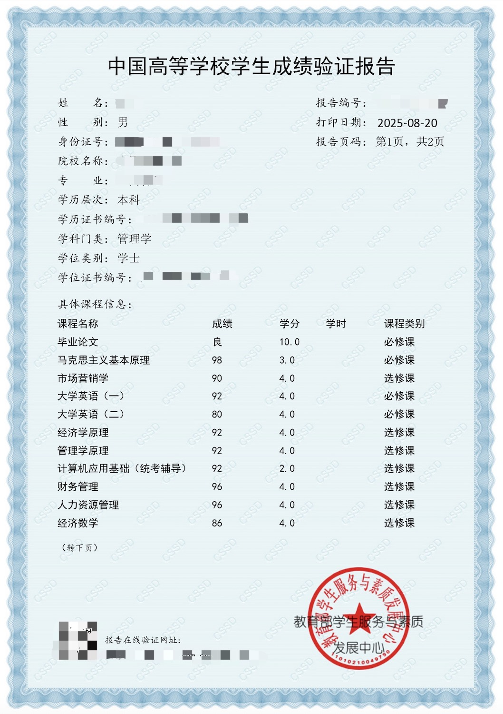
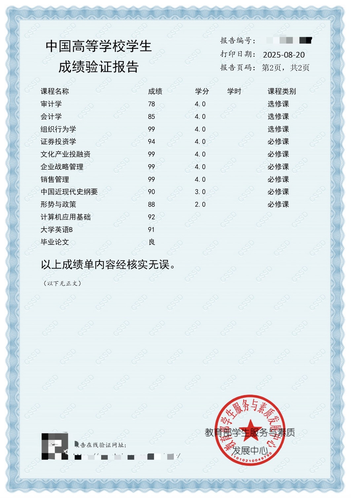
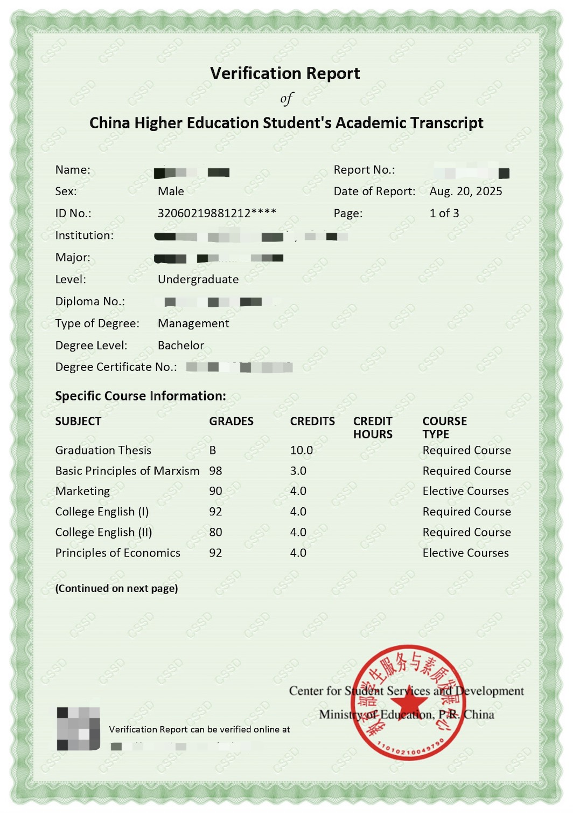
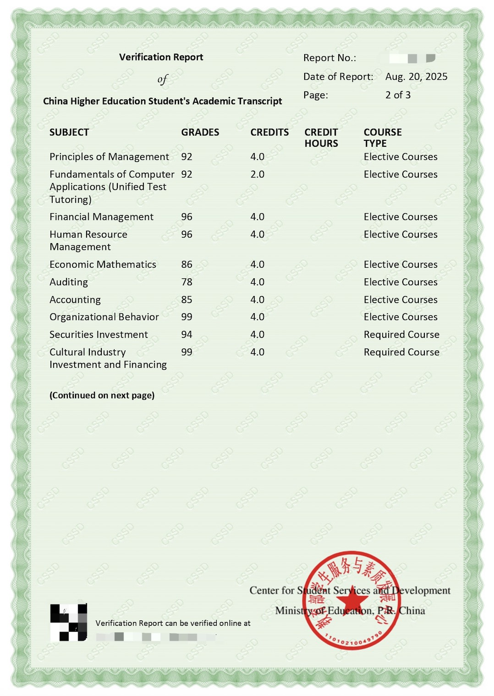
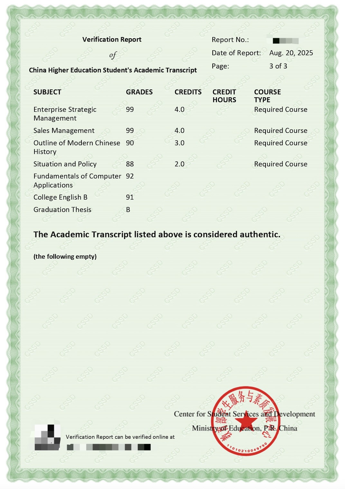
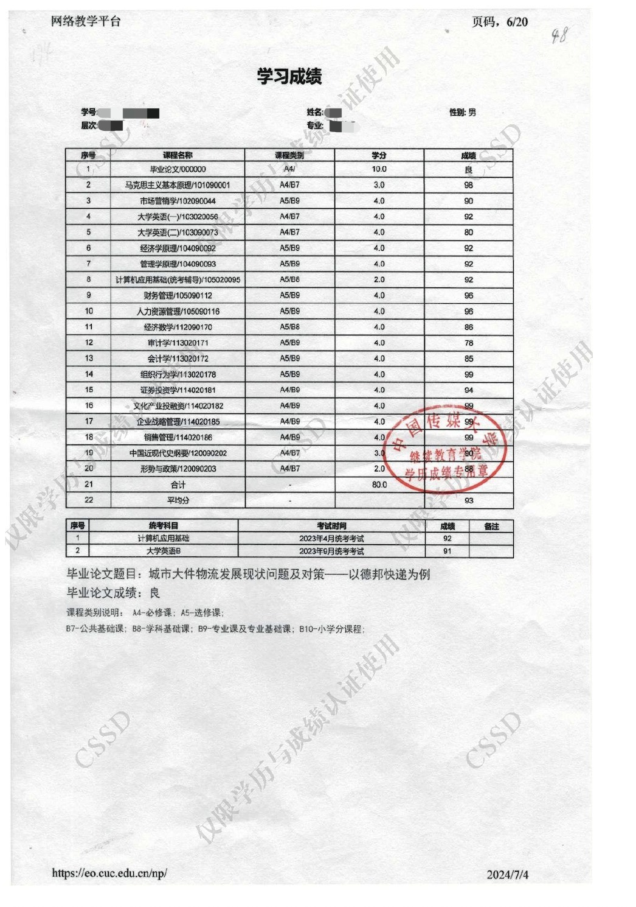
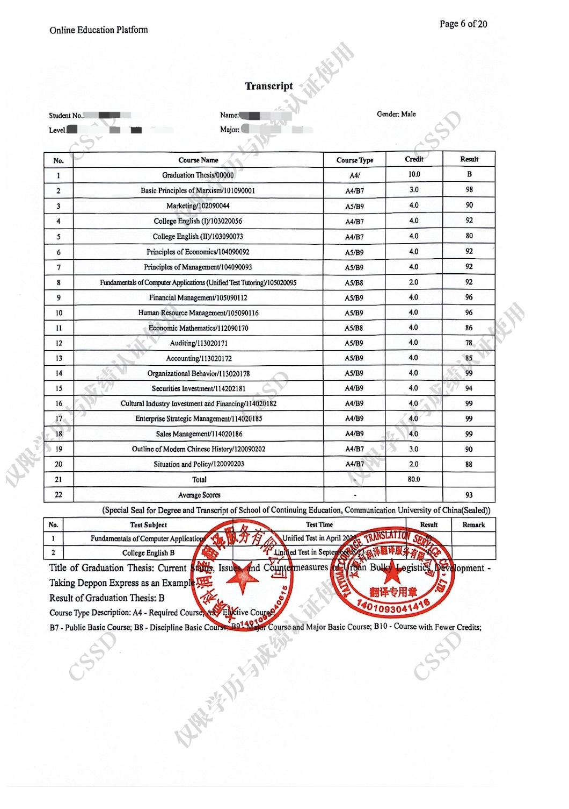
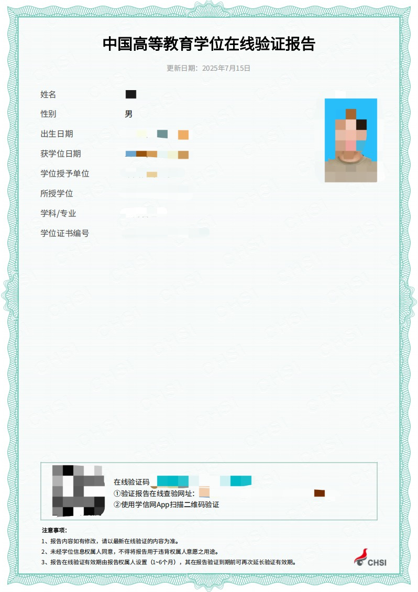
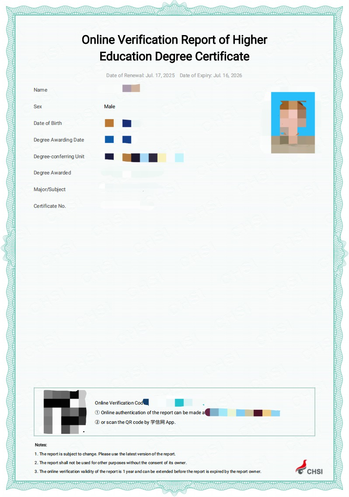

What Is CHSI?
CHSI is commonly used to refer to China’s higher education student information and academic credential verification platform. It provides online records and verification reports that can help receiving organizations confirm Chinese degree, graduation and transcript information.
For broader help with degree certificates, transcripts, university records, WES and overseas use, use the China Academic Document Guides hub. This page remains the technical owner for CHSI/CSSD report types and verification routes.
CHSI verification reports
A CHSI verification report presents verified academic information in a format that can be checked through the issuing platform. Available report types and application requirements depend on the academic record and the current platform options.
Degree or Graduation Record Not Found on CHSI?
Troubleshoot missing degree or graduation records, old-passport identity, account binding and university source-data issues.
Old Passport or Name Mismatch?
Diagnose historical passport, current identity, name-format and record-binding differences when the academic record appears to exist.
WES Asked for More Chinese Documents?
Troubleshoot WES requests involving Chinese degree, graduation, transcript, CSSD/CHSI verification, identity and submission-route issues.
Chinese University Won’t Send Your Transcript to WES?
Check whether WES actually requires university action, CSSD delivery, institution verification or another approved transcript route.
Read the university and WES transcript troubleshooting guide.
For a complete overview of Chinese academic document certification, read our China Degree Certification Guide.
What Is CSSD?
CSSD is the English name associated with the Chinese higher education student services and verification system. In international instructions, the terms CHSI and CSSD may appear in connection with academic verification reports, platform services or document submission routes. Applicants should follow the terminology and report type stated by the receiving authority.
Who Uses These Resources?
Chinese university graduates
Graduates who need to verify a China degree certificate, graduation certificate or transcript for overseas use.
WES and ECA applicants
Applicants preparing verified academic documents for WES, ECA or other credential evaluation agencies.
Universities and employers
Institutions checking whether a CHSI or CSSD report supports a Chinese academic credential.
Apostille and legalization users
People who may need academic documents verified before a separate notarization, apostille or legalization process.
Types of CHSI Verification Reports
Degree Verification Report
Confirms degree information recorded for a Chinese higher education qualification, subject to the records and report options available through the platform.
Graduation Certificate Verification Report
Confirms graduation credential information and should not be treated as interchangeable with a degree verification report.
Academic Transcript Verification Report
Checks academic transcript information such as courses, grades, credits, study dates and the issuing institution.
Online Verification Report
Provides online-verifiable academic information and may include a report number, QR code, verification link and stated validity period.
The samples below include transcript verification reports, degree online verification reports and original transcript examples in Chinese and English. They are provided for general reference and do not replace current official requirements.
Transcript Verification Report Chinese Page 1

Transcript Verification Report Chinese Page 2

Transcript Verification Report English Page 1

Transcript Verification Report English Page 2

Transcript Verification Report English Page 3

Original Chinese Transcript Sample

English Transcript Translation Sample

Degree Online Verification Report Chinese

Degree Online Verification Report English

Degree, Graduation Certificate and Transcript Verification
Degree verification, graduation certificate verification and academic transcript verification address different records. A degree report concerns the academic degree awarded, a graduation report concerns completion of the academic program, and a transcript report concerns the detailed study record. A receiving organization may request one or several of these reports.
If you need assistance obtaining Chinese academic verification reports, visit our China Degree & Transcript Verification Service page.
Common Document Checks
Submitting only the degree certificate
Many evaluators require a formal CHSI or CSSD verification report, not just a scanned diploma.
Wrong report language
Some agencies require English reports, while others can accept Chinese reports with certified translation.
Expired or unverifiable report
Online verification reports may have validity periods or verification codes that must remain active.
Mixing transcript and degree requirements
Degree verification and transcript verification are different documents and may both be required.
How CHSI Verification Works
- Identify whether the receiving authority needs a degree verification report, graduation certificate verification report, transcript verification report, original academic record, translation or a combination of these documents.
- Use the current official platform route for the relevant academic record and provide the information or supporting material requested for that report type.
- Review the issued report language, report number, verification report validity, QR code and online verification information before submission.
- Confirm whether the receiving organization requires direct delivery, an online verification link, a downloadable report or applicant upload.
A report number or QR code may allow the receiving party to check an online verification report, but the available verification method depends on the report format and current platform functions.
When CHSI Reports Are Required
CHSI or CSSD reports may be requested for overseas university admission, credential evaluation, immigration, employment, professional licensing or other academic recognition purposes. Requirements are set by the receiving institution or authority, so applicants should confirm the required report type, language, validity and delivery method before applying.
China degree and transcript verification is commonly used for applications connected to destinations including but not limited to:
CHSI Verification and WES Credential Evaluation
WES may require verified Chinese academic records as part of its credential evaluation process. The documents and submission route depend on the credential and the instructions shown for the applicant’s case. A CHSI or CSSD report supports document verification, but WES independently reviews the submitted credentials and determines the final evaluation result.
If you are preparing documents for WES, read our WES Certification Guide for China Degrees.
Frequently Asked Questions
What is CHSI?
CHSI is commonly used to describe China’s higher education student information and academic credential verification platform. It provides access to certain education records and online verification reports for Chinese degrees, graduation credentials and academic transcripts. Universities, credential evaluators, employers and other overseas authorities may use these reports to check submitted academic information. Available services and report formats depend on the record type and current official platform options.
What is the difference between CHSI and CSSD?
CHSI is the widely recognized name associated with China’s higher education information website and verification platform. CSSD is the English name used for the student services and development center connected with academic verification services. International agencies may refer to either term in their instructions. Applicants should follow the exact report type and submission method requested rather than assuming that every CHSI or CSSD document serves the same purpose.
Which Chinese academic documents can be verified?
Depending on the available official records and platform services, verification may cover Chinese degree certificates, graduation certificates and academic transcripts. Degree, graduation and transcript reports confirm different parts of an academic history and are not automatically interchangeable. Some reports may be available in Chinese or English and may include online verification details. Applicants should check which document, language and report format the receiving institution requires before submitting an application.
Is CHSI verification required for WES?
CHSI or CSSD verification is often relevant for Chinese academic credentials submitted to WES, but requirements can vary by credential, education history and the instructions attached to an individual application. Applicants should use the current document checklist in their WES account and follow the specified delivery method. A CHSI verification report confirms academic information; it does not determine the credential equivalency or guarantee the final evaluation issued by WES.
How long is a CHSI verification report valid?
Validity depends on the report type, issue settings and current official platform rules. Some online verification reports display a validity period and may offer an official way to extend or update access, while other reports may be handled differently. Check the date, report number, QR code and online verification status before submission. The receiving institution may also impose its own recency requirements, so applicants should confirm both platform and recipient instructions.
Need Help?
Need China degree or transcript verification?
Send your education background, target country and agency instructions. Global Attest can help prepare the right verification and document package.
Degree Verification ServiceWES Support